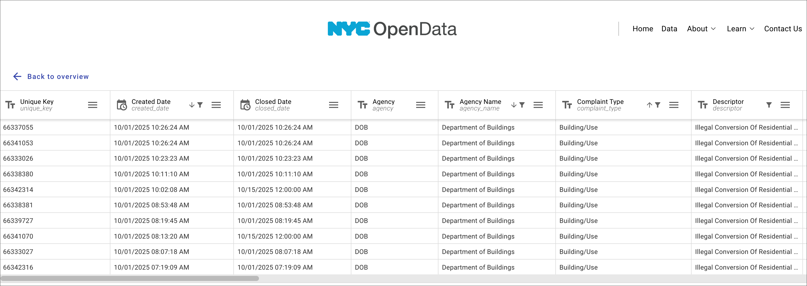
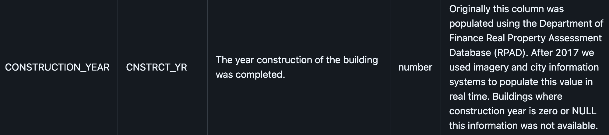
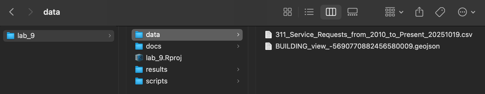

Class 9 Lab: Working with Dates & Time in R
Fall 2025 | Instructor: Stephen Metts | PGUD 5160 - CRN 2247
Preamble
In this ninth demonstration lab, we will continue to repeat the project setup phase of previous weeks (setting the working directory to lab_9) then move along to working with the tidyverse package generally, but with the explicit addition of lubridate, forcats along with scales and stringr.
This lab can and should be used in conjunction with this week’s assignment 9 deliverable - Assignment 9.
This lab walks through a compact set of tidyverse based workflows to transform, analyze and visualize the time dimension of NYC data.
Data
In this week’s lab, we will work with data that has previously been downloaded first from the 311 NYC OpenData platform; and second from NYC Planning for the builidngs footprints data set.
To start, we will utilize 311 from the OpenNYC platform. Our query to return 75,543 unique complaints for Illegal Conversion of Residential Building/Space is as follows:
- Agency Name =
Department of Buildings - Complaint Type =
Building/Use - Descriptor =
Illegal Conversion of Residential Building/Space - Created Date is between
2020 Jan 01and2025 Oct 01

Illegal Conversion of Residential Building/Space We can note in the previous preview of the returned data that our Create Date is in the form of date + time.
In order to proceed with our lubridate workflow in this lab, we will utilize the following to parse and format:
lubridate::mdy_hms("10/01/2025 10:26:24 AM")
Explanation:
m = month
d = day
y = year
_hms = hour-minute-second
automatic handling of AM/PM
Second, we will utilze the NYC Buildings Footprint spatial data set:
Building footprints represent the full perimeter outline of each building as viewed from directly above. Additional attribute information maintained for each feature includes: Building Identification Number (BIN); Borough, Block, and Lot information(BBL); ground elevation at building base; roof height above ground elevation; construction year, and feature type.

CONSTRUCTION_YEAR is the time dimension of the buildings footprint layer in number format For lab_9, we will download a prepared data directory that has all necessary data for both this week’s lab as well as assignment:
This data subdirectory will be in .zip format; make sure to uncompress the directory before engaging it with this week’s lab script. Further, change the name from lab_9_data-subdirectory to simply data and place it into your lab_9 directory.
Lab Setup
Step 1: Project Management in RStudio for lab_9 (also applicable for assignment_9)
As we have done for previous labs, we will create a lab_9 project directory:

A well-organized folder structure within an RStudio project is crucial. Common conventions include:
data/: For raw data (treated as read-only).
docs/: For documentation or R Markdown files.
results/: For outputs and generated results.
scripts/: For R scripts and analysis pipelines.
Step 2:
With the lab_9.Rproj established and the subdirectories for our data analyses established, we can print both the working directory and all the paths and files therein:
Your ‘upstream’ path will likely be different than Users/x15… if you are using macOS, your full path would be akin to /Users/your_machine_name/Desktop/lab_9. On macOS, this can also be expressed as ~/Desktop/lab_9:
The tilde ~ is a special character that acts as a shortcut for the current user’s home directory.
This is fine; we want to simply make sure that the directory we created - lab_9 is indeed the directory in which and from which we are and will be working.
Step 3:
For this week’s lab, utilize the following script in conjunction with the previous data subdirectory download.
Class 9 Time Dimension lab script
Open the script from the scripts subdirectory: File>Open File>lab_7>scripts>c9_lab9-script-1.R
🧭 Lab 9: Working with the Time Dimension in R (Part I)
Packages: tidyverse, lubridate, forcats, scales
Data:
- 311_Service_Requests_from_2010_to_Present_20251019.csv
This lab explores how to detect, parse, and visualize time in tabular data, using NYC’s 311 complaint records related to building activity.
We move from raw text dates to clean, ordered, and visual summaries using lubridate and forcats.
🗂️ 1. Setup & Read Data
We begin by loading core packages and reading the CSV file.
The dataset includes time-stamped 311 service requests; our goal is to locate and interpret the date columns.
🔍 2. Identify Columns Containing Time or Date Information
We can quickly find likely time-related columns by name pattern and preview some example values.
time_cols <- names(dob) %>% str_subset(regex("(date|time)", ignore_case = TRUE))
message("Likely time/date columns: ", paste(time_cols, collapse = ", "))
dob %>%
select(all_of(time_cols)) %>%
summarise(across(everything(), ~ paste(head(unique(.x), 3), collapse = " | "))) %>%
pivot_longer(everything(), names_to = "column", values_to = "examples") %>%
arrange(column)⏱️ 3. Detect and Parse Date-Time Format
We test a small sample to detect the format of Created Date, then explicitly parse the full column using lubridate::mdy_hms() (with AM/PM).
x <- dob$`Created Date`
trial <- suppressWarnings(mdy_hms(head(x[!is.na(x)], 100), tz = "America/New_York"))
message(sprintf("Detected mdy_hms (AM/PM) → parsed %.1f%% of sample",
mean(!is.na(trial)) * 100))
dob <- dob |>
mutate(
created_date_raw = `Created Date`,
created_date = mdy_hms(`Created Date`, tz = "America/New_York")
)🧮 4. Sanity Check the Parsed Result (always a good data hygiene step)
Confirm the new column is a proper POSIXct time, and review ranges, timezone, and missing values.
stopifnot("created_date" %in% names(dob), inherits(dob$created_date, "POSIXt"))
dob %>%
summarise(
rows = n(),
parsed_NA = sum(is.na(created_date)),
tz = attr(created_date, "tzone") %||% Sys.timezone(),
min_created = min(created_date, na.rm = TRUE),
max_created = max(created_date, na.rm = TRUE)
)Then review the year distribution to ensure values look reasonable:
📆 5. Extract and Order Time Parts with lubridate and forcats
We now extract year and month components, preserving chronological month order with forcats.
📊 6. Summarize by Time Dimensions
We build three summarized datasets for different time views.
# (a) Monthly time series (continuous over time)
by_ym <- dob_time %>%
count(ym, name = "n") %>%
arrange(ym)
# (b) Month × Year grid (for line or facet plots)
by_year_month <- dob_time %>%
count(year, month, name = "n") %>%
complete(year, month, fill = list(n = 0)) %>%
arrange(year, month)
# (c) All-year seasonality (total by month)
by_month_all <- dob_time %>%
count(month, name = "n") %>%
arrange(month)📈 7. Visualize Patterns Over Time
(a) Monthly Time Series
A simple line plot showing overall complaint volume by month.
range_txt <- function(x) {
rng <- range(x, na.rm = TRUE)
paste0(format(rng[1], "%b %Y"), "–", format(rng[2], "%b %Y"))
}
ggplot(by_ym, aes(ym, n)) +
geom_line(linewidth = 0.8) +
labs(
title = "311 ‘Building Construction’ Complaints — Monthly",
subtitle = range_txt(by_ym$ym),
x = NULL, y = "Complaints per month",
caption = "Source: NYC Open Data (311 Service Requests, time = Created Date)"
) +
scale_x_date(date_breaks = "6 months", date_labels = "%b %Y") +
scale_y_continuous(labels = label_number(big.mark = ",")) +
theme_minimal(base_size = 12) +
theme(axis.text.x = element_text(angle = 45, hjust = 1))(b) Seasonal Lines by Year
Compare patterns across years, using color to distinguish each year.
ggplot(by_year_month, aes(month, n, group = year, color = factor(year))) +
geom_line(linewidth = 0.8) +
labs(
title = "Seasonality by Year — 311 ‘Building Construction’ Complaints",
subtitle = "Calendar months (Jan–Dec) compared across years",
x = NULL, y = "Complaints", color = "Year",
caption = "Source: NYC Open Data (311 Service Requests)"
) +
scale_y_continuous(labels = label_number(big.mark = ",")) +
theme_minimal(base_size = 12)(c) Faceted Small Multiples by Year
Each panel shows the seasonal pattern for one year — helpful for scanning yearly variation.
ggplot(by_year_month, aes(month, n, group = 1)) +
geom_line(linewidth = 0.8) +
facet_wrap(vars(year), ncol = 4) +
labs(
title = "Seasonality (Small Multiples) — 311 ‘Building Construction’ Complaints",
subtitle = "Each panel shows Jan–Dec pattern for a given year",
x = NULL, y = "Complaints",
caption = "Source: NYC Open Data (311 Service Requests)"
) +
scale_y_continuous(labels = label_number(big.mark = ",")) +
theme_minimal(base_size = 12)(d) Total Seasonality Across All Years
Aggregate all years together to see which months have the most complaints overall.
ggplot(by_month_all, aes(month, n)) +
geom_col() +
labs(
title = "Seasonality (All Years Combined) — 311 ‘Building Construction’ Complaints",
subtitle = "Total complaints by calendar month",
x = NULL, y = "Total complaints",
caption = "Source: NYC Open Data (311 Service Requests)"
) +
scale_y_continuous(labels = label_number(big.mark = ",")) +
theme_minimal(base_size = 12)🧭 Lab 9: Working with the Time Dimension in R (Part II)
Packages: tidyverse, lubridate, forcats, scales
Data:
- ~/Desktop/lab_9/data/BUILDING_view_-5690770882456580009.geojson
In this lab Part II, we extend our exploration of time as a data dimension by working with NYC Building Footprints.
We’ll identify construction years, clean and validate spatial data, summarize by year and decade, and visualize historical eras through both charts and maps.
1️⃣ Load and Verify Spatial Libraries
We use the sf package for spatial data. This step ensures your installation is up-to-date and linked to valid GEOS / GDAL / PROJ libraries.
2️⃣ Read the GeoJSON File
Load the NYC building footprints dataset as an sf object.
fp_path <- "~/Desktop/lab_9/data/BUILDING_view_-5690770882456580009.geojson"
stopifnot(file.exists(fp_path))
footprints <- st_read(fp_path, quiet = TRUE, options = "FLATTEN_NESTED_ATTRIBUTES=YES")- Note:
FLATTEN_NESTED_ATTRIBUTES=YESexpands nested attribute tables into columns.
3️⃣ Explore Structure and Identify Time Columns
Inspect the dataset’s structure and locate columns that look like time or year fields.
glimpse(footprints)
time_cols <- names(footprints) %>% str_subset(regex("(date|time|year)", ignore_case = TRUE))
print(time_cols)Then, preview a few example values from each of those columns:
4️⃣ Subset to Manhattan by BBL Prefix
The Borough-Block-Lot (BBL) code encodes borough as the first digit.
Manhattan BBLs begin with “1”.
bbl_col <- names(footprints) %>%
{ .[str_detect(., regex("^MAPPLUTO[_]?BBL$", ignore_case = TRUE))] } %>%
{ if (length(.) == 0) names(footprints)[str_detect(names(footprints),
regex("\bMAPPLUTO[_]?BBL\b|^BBL$|\bBBL\b", ignore_case = TRUE))] else . } %>%
first()
footprints <- footprints %>%
mutate(
BBL_chr = case_when(
is.numeric(.data[[bbl_col]]) ~ format(.data[[bbl_col]], scientific = FALSE, trim = TRUE),
TRUE ~ as.character(.data[[bbl_col]])
) |> str_trim()
)
manhattan_fp <- footprints %>% filter(str_starts(BBL_chr, "1"))5️⃣ Clean and Transform Geometry
We project to EPSG 2263 (NY State Plane), fix invalid geometries, and simplify for faster plotting.
sf_use_s2(FALSE)
fp <- manhattan_fp |> st_transform(2263) |> st_make_valid() |> st_buffer(0)
fp <- fp[st_is_valid(fp), ]
fp <- st_simplify(fp, dTolerance = 3, preserveTopology = TRUE)- Tip: Simplifying geometries helps speed up rendering while maintaining shape integrity.
6️⃣ Parse and Validate Construction Year
We extract, clean, and constrain construction years to reasonable limits.
lower_ok <- 1500L
upper_ok <- year(Sys.Date()) + 1L
fp <- fp %>%
mutate(
construction_year_raw = `CONSTRUCTION_YEAR`,
construction_year = readr::parse_integer(as.character(`CONSTRUCTION_YEAR`), na = c("", "NA")),
construction_year = if_else(construction_year == 0L, NA_integer_, construction_year),
construction_year = if_else(construction_year < lower_ok | construction_year > upper_ok, NA_integer_, construction_year),
construction_date = make_date(year = construction_year, month = 1, day = 1)
)7️⃣ Summarize by Year and Decade
Compute counts per year and decade, keeping the order chronological via forcats.
by_year <- fp %>%
filter(!is.na(construction_year)) %>%
count(construction_year, name = "n") %>%
arrange(construction_year) %>%
mutate(year_f = factor(construction_year, levels = construction_year, ordered = TRUE))
by_decade <- fp %>%
filter(!is.na(construction_year)) %>%
mutate(decade = (construction_year %/% 10) * 10,
decade_label = paste0(decade, "s")) %>%
count(decade, decade_label, name = "n") %>%
arrange(decade) %>%
mutate(decade_f = factor(decade_label, levels = decade_label, ordered = TRUE))8️⃣ Visualize Building Activity over Time
A. Buildings by Construction Year
B. Buildings by Decade
ggplot(by_year, aes(year_f, n)) +
geom_col() +
labs(title = "Buildings by Construction Year", x = NULL, y = "Count") +
theme_minimal(base_size = 12) +
theme(axis.text.x = element_text(angle = 90, vjust = 0.5))
ggplot(by_decade, aes(decade_f, n)) +
geom_col() +
labs(title = "Buildings by Decade of Construction", x = NULL, y = "Count") +
theme_minimal(base_size = 12)These plots reveal construction peaks and troughs over time, reflecting economic and policy shifts in NYC’s development.
9️⃣ Classify Eras: Pre-war vs Post-war
We define Pre-war (< 1940) and Post-war (≥ 1940) categories and map them.
fp <- fp %>%
mutate(
era = case_when(
!is.na(construction_year) & construction_year < 1940L ~ "Pre-war",
!is.na(construction_year) & construction_year >= 1940L ~ "Post-war",
TRUE ~ NA_character_
),
era = factor(era, levels = c("Pre-war", "Post-war"), ordered = TRUE)
)
ggplot(filter(fp, !is.na(era))) +
geom_sf(aes(fill = era), color = NA, linewidth = 0) +
scale_fill_manual(values = c("Pre-war" = "orange", "Post-war" = "steelblue")) +
labs(
title = "NYC Building Footprints — Manhattan (EPSG:2263)",
subtitle = "Pre-war (<1940) vs Post-war (≥1940); simplified at ~3 ft tolerance",
fill = "Era",
caption = "Source: NYC Building Footprints (GeoJSON)"
) +
theme_minimal(base_size = 12)🔚 Reflection
This lab connects temporal data handling to spatial visualization. First, we’ve plotted the time dimension of the 311 data set for Illegal Conversion of Residential Building/Space. Second, by parsing and mapping the CONSTRUCTION_YEAR, we uncover how time reveals urban history — from pre-war density to post-war expansion.
💡 Interpretation
Through these workflows, we’ve moved from raw character timestamps to rich temporal summaries.
By combining lubridate, forcats, sf and ggplot2, we can:
- Parse messy date formats automatically
- Extract and order time dimensions
- Summarize data consistently across multiple scales (month, year)
- Visualize temporal cycles and seasonality in civic datasets
- Map meaningful threshold and factored categories (‘pre war’ vs ‘post war’ buildings)
This pipeline can be easily adapted to any dataset with time stamps. NYC is full of data that contains the temporal dimension all the way from seconds in the case of the 311 data, to full years in the case of the buildings data.
🧠 What We’ve Covered
| Step | Concept | Package |
|---|---|---|
| Parsing | Making messy strings into usable dates | lubridate |
| Extracting | Turning time into categories | lubridate + forcats |
| Summarizing | Collapsing events into bins | dplyr |
| Visualizing | Showing time as trend or cycle | ggplot2 |
| Mapping | Spatialize data for cartographic design | sf |
💬 Wrap-Up Reflection
Discussion prompts: - What patterns over time did you find?
- Did you notice seasonal, cyclical, or irregular behavior?
- How does aggregating by month vs. year change the story?
- In the case of the buildings data set, what insights did we achieve in spatial mapping vs non-spatial plotting?
Assignment 8 Link:
Scripts & Lab Data:
Class 9 Lab 9 R Script #1 - open in your RStudio
scriptsFile>Open File>lab_8>scripts>c9_lab9-script-1.R